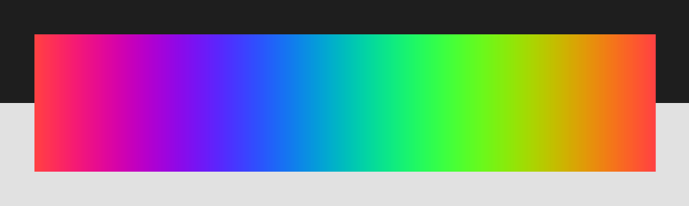

clojure2d.extra.utils
Set of various utilities which can be used to display various objects.
Categories
Other vars: color->image gradient->image palette->image show-color show-gradient show-image show-palette show-scalar-field show-vector-field
gradient->image
(gradient->image gradient)(gradient->image gradient luma?)Create image with rendered gradient.
Input: gradient function (see gradient).
Examples
Rendered gradient
palette->image
(palette->image palette)(palette->image palette luma?)Create image with rendered palette.
Input: list of colors.
Examples
Rendered palette
show-gradient
(show-gradient gradient)(show-gradient gradient luma?)Display gradient.
Input: gradient function (see gradient).
Examples
Usage
(show-gradient (c/gradient [:yellow :darkblue]))show-palette
(show-palette palette)(show-palette palette luma?)Display palette.
Input: list of colors.
Examples
Usage
(show-palette [:red :green :blue])